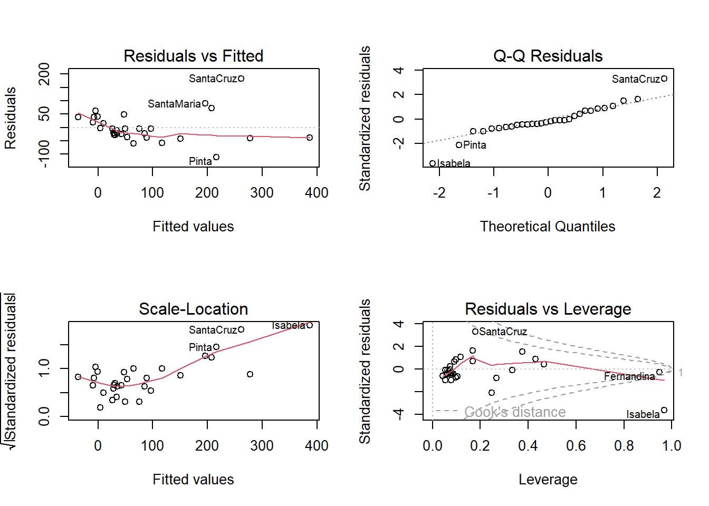
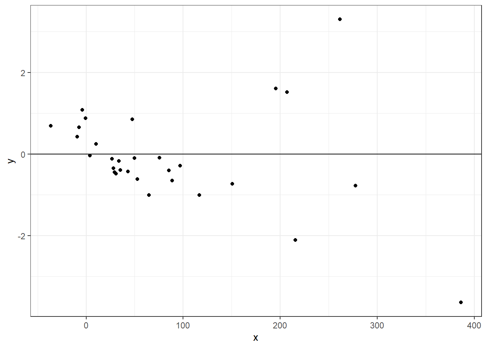
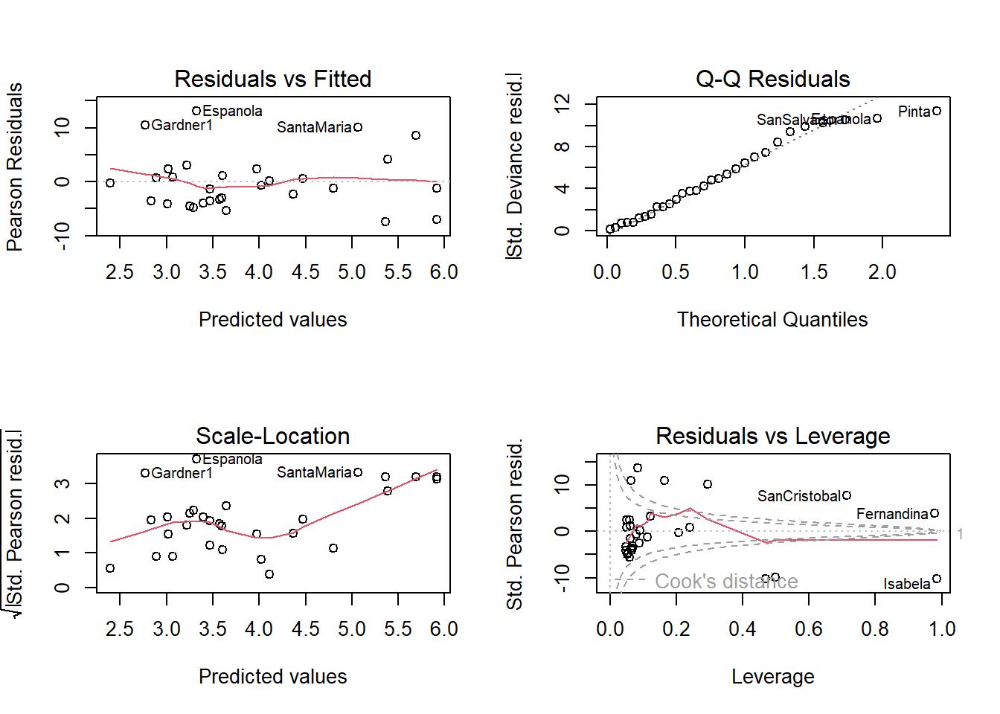

Warning: package 'ISwR' was built under R version 4.3.3 admit gre gpa rank
1 0 380 3.61 3
2 1 660 3.67 3
3 1 800 4.00 1
4 1 640 3.19 4
5 0 520 2.93 4
6 1 760 3.00 2We can address a larger amount of problems and models by abstracting a general for of linear models to account for categorical responses types such as binomial, multinomial, and poisson.
A GLM is defined by specifying two components:
The distribution of \(Y\) is from the exponential family of distributions, and takes the general form of:
\[f(y|\theta, \phi) = exp(\frac{y\theta - b(\theta)}{a(\theta)} + c(y, \theta))\]
Let
A GLM has three components:
From general likelihood theory, we know that \(E[l'(\theta)] = 0 \rightarrow E[Y] = \mu = b'(\theta)\)
\(f(y|\theta, \phi) = \binom{n}{y} \mu^y (1-\mu)^{n-y}\)
\(= exp(ylog\mu + (n-y)log(1-\mu) + log\binom{n}{y})\)
\(= exp(ylog\frac{\mu}{1-\mu} +nlog(1-\mu) + log\binom{n}{y})\)
However, we usually represent binomial/logistic regression as:
\[\hat{n_i} = \hat{\beta_0} + \hat{\beta_{1}}x_{i, 1} + \dots + \hat{\beta_{2}}x_{i, 2} = log(\frac{\hat{p_i}}{1-\hat{p_i}})\]
\(f(y|\theta, \phi) = \frac{e^{-\mu}\mu^y}{y!}\)
\(= exp(ylog\mu - \mu - log(y!))\)
However, we usually represent Poisson regression as:
\[\hat{n_i} = \hat{\beta_0} + \hat{\beta_{1}}x_{i, 1} + \dots + \hat{\beta_{2}}x_{i, 2} = log(\hat{\lambda_i})\]
| Family | Link | Variance Function |
|---|---|---|
| Binomial | \(\eta=log(\frac{\mu}{1-\mu})\) | \(\mu(1-\mu)\) |
| Poisson | \(\eta=log(\mu)\) | \(\mu\) |
| Type | Random Component | Systematic Component | Link Function |
|---|---|---|---|
| Linear Regression | \(Y \sim Normal\) | \(\eta=\beta_0 + \beta_1 x_1 + \dots + \beta_p x_p\) | Identity |
| Logistic Regression | \(Y \sim Binomial\) | \(\eta=\beta_0 + \beta_1 x_1 + \dots + \beta_p x_p\) | logit: \(\eta = log(\frac{p}{1-p})\) |
When comparing
\(\Lambda = 2 log(\frac{L(\beta_{p+1}; y)}{L(\beta_{q+1}; y)})\)
\(= 2(l(\beta_{p+1}; y) - l(\beta_{q+1}; y))\)
Likelihood Ratio Test:
For goodness of fit we’ll use both the likelihood ratio statistic and deviance. The deviance measures how close the smaller \(q\) model (model we’re actually fitting) comes to perfectly fitting the data.
Let the \(p\) model be the perfectly fitting model (as well as any model can).
then, \(\hat{p_i} = \frac{y_i}{n_i}\)
\(D = 2 \sum\limits_{i=1}^n (y_i log(\frac{y_i}{\hat{y_i}}) + (n_i - y_i)log(\frac{n_i - y_i}{n_i - \hat{y_i}}))\)
\(D = -2l(\hat{\beta})\)
\(= -2 \sum\limits_{i=1}^n (y_i\hat{n_i} - e^{\hat{n_i}} - log(y_i!))\)
\(D_{null} = -2 \sum\limits_{i=1}^n (y_i log(\bar{y}) - \hat{\lambda_i} - log(y_i!))\)
\(= -2 \sum\limits_{i=1}^n (y_i log(\bar{y}) - \bar{y} - log(y_i!))\)
\(D_{saturated} = -2 \sum\limits_{i=1}^n (y_i log(y_i) - y_i - log(y_i!))\)
\(D_{residual} = D_{saturated} - D_{null}\)
Distributed with \(\chi^2\)
For an event \(E\), the odds in favor of \(E\) are defined as:
\(o_E = \frac{p}{1-p}\)
\(\frac{p}{1-p} = exp(\beta_0 + \beta_1 x)\)
Log Odds
\(log(\frac{p}{1-p}) = \beta_0 + \beta_1 x\)
If we increase \(x \rightarrow x+1\)
Then \(odds = exp(\beta_0 + b_1(x+1)) = exp(\beta_0 + \beta_1x + \beta_1) = exp(\beta_1)exp(\beta_0 + \beta_1x)\)
i.e. we have been doing linear regression all along, but for the log-odds instead of probability.
\(sigm(\beta_0 + \beta_1x_1 + \beta_2x_2) = \frac{1}{1 + e^{-(\beta_0 + \beta_1x_1 + \beta_2x_2)}}\)
Import Libraries and Data
Warning: package 'ISwR' was built under R version 4.3.3 admit gre gpa rank
1 0 380 3.61 3
2 1 660 3.67 3
3 1 800 4.00 1
4 1 640 3.19 4
5 0 520 2.93 4
6 1 760 3.00 2Perform Logistic Regression with admit as the response and rank as the categorical variable
Call:
glm(formula = admit ~ gre + gpa + rank, family = binomial, data = admission)
Coefficients:
Estimate Std. Error z value Pr(>|z|)
(Intercept) -3.989979 1.139951 -3.500 0.000465 ***
gre 0.002264 0.001094 2.070 0.038465 *
gpa 0.804038 0.331819 2.423 0.015388 *
rank2 -0.675443 0.316490 -2.134 0.032829 *
rank3 -1.340204 0.345306 -3.881 0.000104 ***
rank4 -1.551464 0.417832 -3.713 0.000205 ***
---
Signif. codes: 0 '***' 0.001 '**' 0.01 '*' 0.05 '.' 0.1 ' ' 1
(Dispersion parameter for binomial family taken to be 1)
Null deviance: 499.98 on 399 degrees of freedom
Residual deviance: 458.52 on 394 degrees of freedom
AIC: 470.52
Number of Fisher Scoring iterations: 4confint.default(admission_glm) 2.5 % 97.5 %
(Intercept) -6.2242418514 -1.755716295
gre 0.0001202298 0.004408622
gpa 0.1536836760 1.454391423
rank2 -1.2957512650 -0.055134591
rank3 -2.0169920597 -0.663415773
rank4 -2.3703986294 -0.732528724head(model.matrix(admission_glm)) (Intercept) gre gpa rank2 rank3 rank4
1 1 380 3.61 0 1 0
2 1 660 3.67 0 1 0
3 1 800 4.00 0 0 0
4 1 640 3.19 0 0 1
5 1 520 2.93 0 0 1
6 1 760 3.00 1 0 0Construct Reduced Model without rank. Conduct the likelihood ratio test to decide whether the reduced model is sufficient.
Call:
glm(formula = admit ~ gre + gpa, family = binomial, data = admission)
Coefficients:
Estimate Std. Error z value Pr(>|z|)
(Intercept) -4.949378 1.075093 -4.604 4.15e-06 ***
gre 0.002691 0.001057 2.544 0.0109 *
gpa 0.754687 0.319586 2.361 0.0182 *
---
Signif. codes: 0 '***' 0.001 '**' 0.01 '*' 0.05 '.' 0.1 ' ' 1
(Dispersion parameter for binomial family taken to be 1)
Null deviance: 499.98 on 399 degrees of freedom
Residual deviance: 480.34 on 397 degrees of freedom
AIC: 486.34
Number of Fisher Scoring iterations: 4anova(admission_red_glm, admission_glm, test = "Chisq") # likelihood ratio testAnalysis of Deviance Table
Model 1: admit ~ gre + gpa
Model 2: admit ~ gre + gpa + rank
Resid. Df Resid. Dev Df Deviance Pr(>Chi)
1 397 480.34
2 394 458.52 3 21.826 7.088e-05 ***
---
Signif. codes: 0 '***' 0.001 '**' 0.01 '*' 0.05 '.' 0.1 ' ' 1The test reveals a small p-value, therefore we can reject the null hypothesis in favor of the alternative hypothesis that the reduced model is not sufficient.
Dataset for Poisson Regression
gala = read.table("https://www.colorado.edu/amath/sites/default/files/attached-files/gala.txt", header = TRUE, sep = "\t")
gala = gala[,-2]
head(gala) Species Area Elevation Nearest Scruz Adjacent
Baltra 58 25.09 346 0.6 0.6 1.84
Bartolome 31 1.24 109 0.6 26.3 572.33
Caldwell 3 0.21 114 2.8 58.7 0.78
Champion 25 0.10 46 1.9 47.4 0.18
Coamano 2 0.05 77 1.9 1.9 903.82
Daphne.Major 18 0.34 119 8.0 8.0 1.84dim(gala)[1] 30 6See how a linear model looks
Call:
lm(formula = Species ~ ., data = gala)
Residuals:
Min 1Q Median 3Q Max
-111.679 -34.898 -7.862 33.460 182.584
Coefficients:
Estimate Std. Error t value Pr(>|t|)
(Intercept) 7.068221 19.154198 0.369 0.715351
Area -0.023938 0.022422 -1.068 0.296318
Elevation 0.319465 0.053663 5.953 3.82e-06 ***
Nearest 0.009144 1.054136 0.009 0.993151
Scruz -0.240524 0.215402 -1.117 0.275208
Adjacent -0.074805 0.017700 -4.226 0.000297 ***
---
Signif. codes: 0 '***' 0.001 '**' 0.01 '*' 0.05 '.' 0.1 ' ' 1
Residual standard error: 60.98 on 24 degrees of freedom
Multiple R-squared: 0.7658, Adjusted R-squared: 0.7171
F-statistic: 15.7 on 5 and 24 DF, p-value: 6.838e-07Warning in sqrt(crit * p * (1 - hh)/hh): NaNs produced
Warning in sqrt(crit * p * (1 - hh)/hh): NaNs produced
df = data.frame(x = fitted(lmod), y = stdres(lmod))
ggplot(df, aes(x = x, y = y)) +
geom_point() +
theme_bw() +
geom_hline(yintercept = 0)
Poisson Regression
Call:
glm(formula = Species ~ ., family = poisson, data = gala)
Coefficients:
Estimate Std. Error z value Pr(>|z|)
(Intercept) 3.155e+00 5.175e-02 60.963 < 2e-16 ***
Area -5.799e-04 2.627e-05 -22.074 < 2e-16 ***
Elevation 3.541e-03 8.741e-05 40.507 < 2e-16 ***
Nearest 8.826e-03 1.821e-03 4.846 1.26e-06 ***
Scruz -5.709e-03 6.256e-04 -9.126 < 2e-16 ***
Adjacent -6.630e-04 2.933e-05 -22.608 < 2e-16 ***
---
Signif. codes: 0 '***' 0.001 '**' 0.01 '*' 0.05 '.' 0.1 ' ' 1
(Dispersion parameter for poisson family taken to be 1)
Null deviance: 3510.73 on 29 degrees of freedom
Residual deviance: 716.85 on 24 degrees of freedom
AIC: 889.68
Number of Fisher Scoring iterations: 5Warning in sqrt(crit * p * (1 - hh)/hh): NaNs produced
Warning in sqrt(crit * p * (1 - hh)/hh): NaNs produced
df = data.frame(x = predict(glmod, type = "link"), y = stdres(glmod))
ggplot(df, aes(x = x, y = y)) +
geom_point() +
theme_bw() +
geom_hline(yintercept = 0)
Interpret the parameter associated with Nearest
exp(8.826e-03)[1] 1.008865This means that, given the model is correct, a one unit increase in Nearest is associated with a multiplicitive increase of \(e^{8.826e-03} = 1.01\) in species, on average, adjusting for other predictors.
Calculate the deviance for Poisson regression. Does this value show in the summary? Also, check the goodness of fit of this model using Pearson’s \(\chi^2\) statistic. What can you conclude about the fit?
[1] 716.8458[1] 0summary(glmod)
Call:
glm(formula = Species ~ ., family = poisson, data = gala)
Coefficients:
Estimate Std. Error z value Pr(>|z|)
(Intercept) 3.155e+00 5.175e-02 60.963 < 2e-16 ***
Area -5.799e-04 2.627e-05 -22.074 < 2e-16 ***
Elevation 3.541e-03 8.741e-05 40.507 < 2e-16 ***
Nearest 8.826e-03 1.821e-03 4.846 1.26e-06 ***
Scruz -5.709e-03 6.256e-04 -9.126 < 2e-16 ***
Adjacent -6.630e-04 2.933e-05 -22.608 < 2e-16 ***
---
Signif. codes: 0 '***' 0.001 '**' 0.01 '*' 0.05 '.' 0.1 ' ' 1
(Dispersion parameter for poisson family taken to be 1)
Null deviance: 3510.73 on 29 degrees of freedom
Residual deviance: 716.85 on 24 degrees of freedom
AIC: 889.68
Number of Fisher Scoring iterations: 5The Chisq statistic is very large, and the p-value is small, so we would reject the null hypothesis that the model fits the data.
Let’s look at the binomial regression model for this.
# predict admit from gre, gpa, rank
newData <- data.frame(gre=600, gpa=3.8, rank=as.factor(4))
predict(admission_glm, newdata = newData) 1
-1.127445 predict(admission_glm, newdata = newData, type = 'response') 1
0.244633 Note that type response returns the percent associated with the model.